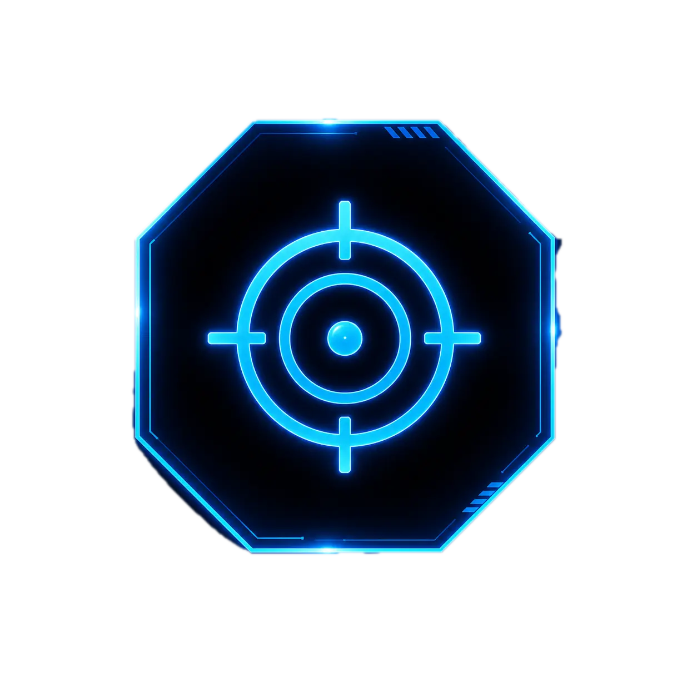
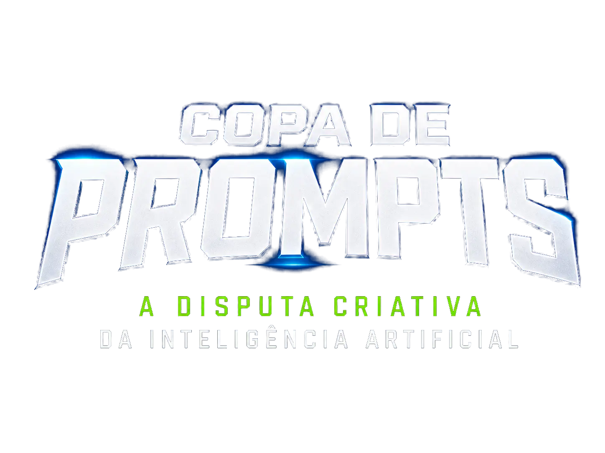
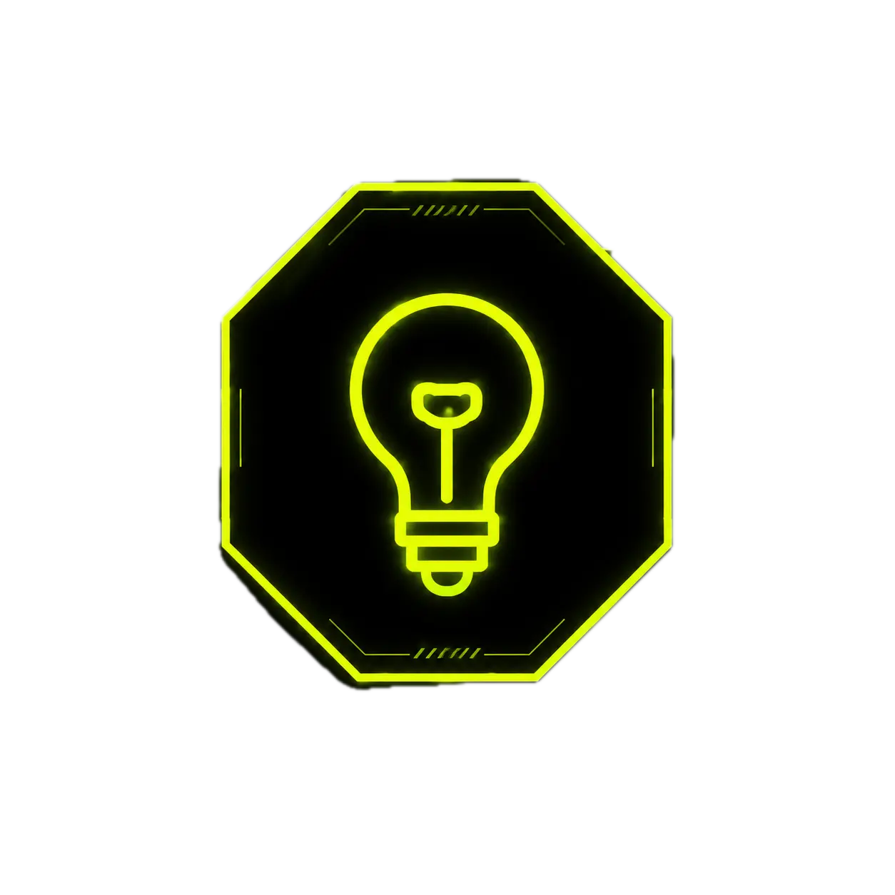

Objetivo
Capacitar membros, servidores e estagiários em engenharia de prompts e uso responsável da IA generativa.

Criatividade, estratégia e IA em campo.
O Torneio
A Copa de Prompts do MPAC é uma competição gamificada de aprendizagem prática e colaborativa, voltada para o uso ético, seguro e útil da inteligência artificial no trabalho institucional.

Capacitar membros, servidores e estagiários em engenharia de prompts e uso responsável da IA generativa.

Estimular soluções que otimizem rotinas institucionais e administrativas, com foco em produtividade e utilidade.
Os prompts aprovados alimentam o hub tecnológico institucional e ficam disponíveis para reaproveitamento.
Como Funciona
Cada equipe pode ter de 2 a 4 integrantes, com capitão e substituto indicados no ato da inscrição. As áreas temáticas passam por etapas semanais, com ritmo de campeonato e julgamento assistido por IA.
As inscrições ocorrem de 20/05 a 27/05, via formulário eletrônico, com nome da equipe, integrantes, lotação e área escolhida.
São admitidas equipes mistas ou homogêneas. Se houver mais interessados que vagas, a organização pode ajustar a participação presencial.
A competição acontece entre junho e julho de 2026, com semanas temáticas para Criminal, Cível, Extrajudicial e Área Meio, além de semis e finalíssima.
O VAR da competição combina IA e banca humana, equilibrando estrutura do prompt, originalidade, eficiência técnica e utilidade institucional.
O regulamento prevê a janela de inscrição e a sequência de chaves temáticas abaixo.
Início das inscrições
Término das inscrições
Análise das inscrições
Confirmação das equipes inscritas
Área Criminal
Área Cível
Área Extrajudicial
Área Meio
Semifinais
Finalíssima
Premiação
As equipes vencedoras recebem folga compensatória por integrante, observadas as normas internas do MPAC, além de troféus simbólicos para a equipe vencedora.
1 dia de folga compensatória para cada integrante da equipe vencedora da semana temática, com troféu simbólico.
1 dia adicional de folga compensatória cumulativa para cada integrante da equipe campeã e troféu de campeão.
FAQ
O texto abaixo resume os pontos centrais do PDF para facilitar a leitura sem precisar abrir o regulamento completo.
Membros, servidores efetivos, comissionados e estagiários do MPAC.
Cada equipe deve ter no mínimo 2 e no máximo 4 integrantes, com capitão e substituto definidos na inscrição.
O julgamento usa estrutura de prompt, originalidade e eficiência técnica/utilidade. A nota mistura IA e banca humana.
Não. O regulamento veda o uso de dados pessoais sensíveis, sigilosos ou segredos de justiça nos prompts.
Os resultados semanais são divulgados no site da Copa de Prompts MPAC e nos canais oficiais do MPAC.